Тренды команд КХЛ и НХЛ
Регулярный чемпионат · обновлено 2026-10-30 · КХЛ · НХЛ
Кто чаще всех уходит в большой тотал, у кого почти всегда забивают обе команды, кто тянет игры в овертайм и чья серия идёт прямо сейчас. Тотал считаем по итоговому счёту, с овертаймом и буллитами.
КХЛ
Тотал больше 5,5
матчей с 6+ голами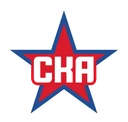
СКА12 из 19- Салават Юлаев11 из 21
- Барыс10 из 20
- Адмирал10 из 20
- Сибирь10 из 22
Тотал меньше 5,5
матчей с 5 голами и меньше Ак Барс19 из 21
Ак Барс19 из 21- Амур16 из 19
- Авангард14 из 18
- Динамо Москва17 из 23
- Северсталь15 из 21
Обе забьют
обе команды забили- Динамо Минск19 из 20
- Трактор18 из 19
- Шанхайские Драконы16 из 18
- Динамо Москва20 из 23
- Сибирь19 из 22
Овертаймы и буллиты
ничья в основное время- Динамо Москва10 из 23
- Динамо Минск7 из 20
- Ак Барс7 из 21
- Торпедо6 из 20
- Адмирал6 из 20
Серия побед
идёт сейчас- Автомобилист4 победы
- Шанхайские Драконы4 победы
 Локомотив3 победы
Локомотив3 победы- Авангард2 победы
- ЦСКА2 победы
Серия поражений
идёт сейчас- Лада4 поражения
- Спартак2 поражения
- Салават Юлаев2 поражения
- Нефтехимик2 поражения
- СКА2 поражения
Сильнее всех дома
побед на своём льду- Локомотив9 из 11
- Автомобилист7 из 9
- Металлург9 из 12
- ЦСКА7 из 10
- Авангард6 из 9
Сильнее всех в гостях
побед на выезде- ЦСКА8 из 10
- Спартак7 из 9
- Торпедо8 из 11
- Шанхайские Драконы8 из 11
- Металлург7 из 10
Все команды
Доля матчей сезона. Нажмите на команду — её страница в приложении.
| Команда | И | Ср. тотал | ТБ 4,5 | ТБ 5,5 | ТБ 6,5 | Обе забьют | ОТ/Б | Серия | Дома | В гостях |
|---|---|---|---|---|---|---|---|---|---|---|
| СКА | 19 | 6,1 | 63% | 63% | 58% | 84% | 21% | 2 П | 6–4 | 3–6 |
| Салават Юлаев | 21 | 5,9 | 57% | 52% | 43% | 81% | 14% | 2 П | 3–6 | 7–5 |
| Барыс | 20 | 6,1 | 80% | 50% | 40% | 75% | 15% | 1 В | 4–4 | 7–5 |
| Адмирал | 20 | 5,2 | 55% | 50% | 40% | 75% | 30% | 2 В | 4–5 | 5–6 |
| Сибирь | 22 | 5,2 | 68% | 45% | 27% | 86% | 18% | 1 В | 2–6 | 6–8 |
| Металлург | 22 | 5,4 | 73% | 45% | 27% | 86% | 27% | 1 П | 9–3 | 7–3 |
| Динамо Минск | 20 | 5,4 | 75% | 45% | 35% | 95% | 35% | 1 П | 5–7 | 2–6 |
| Сочи | 20 | 5,3 | 70% | 45% | 30% | 75% | 5% | 1 П | 3–8 | 3–6 |
| Нефтехимик | 21 | 5,4 | 67% | 43% | 38% | 76% | 19% | 2 П | 6–5 | 5–5 |
| Автомобилист | 20 | 5,2 | 65% | 40% | 20% | 85% | 15% | 4 В | 7–2 | 3–8 |
| Лада | 20 | 5,0 | 60% | 40% | 30% | 65% | 25% | 4 П | 2–8 | 0–10 |
| Шанхайские Драконы | 18 | 5,6 | 78% | 39% | 33% | 89% | 28% | 4 В | 4–3 | 8–3 |
| ЦСКА | 20 | 5,0 | 65% | 35% | 20% | 70% | 10% | 2 В | 7–3 | 8–2 |
| Спартак | 20 | 4,5 | 50% | 35% | 20% | 75% | 20% | 2 П | 4–7 | 7–2 |
| Трактор | 19 | 4,5 | 47% | 32% | 16% | 95% | 21% | 1 П | 3–6 | 5–5 |
| Торпедо | 20 | 4,8 | 60% | 30% | 20% | 75% | 30% | 1 П | 4–5 | 8–3 |
| 20 | 4,5 | 45% | 30% | 25% | 80% | 10% | 3 В | 9–2 | 6–3 | |
| Северсталь | 21 | 4,5 | 57% | 29% | 24% | 71% | 19% | 1 В | 8–4 | 4–5 |
| Динамо Москва | 23 | 4,7 | 52% | 26% | 26% | 87% | 43% | 1 В | 5–8 | 3–7 |
| Авангард | 18 | 4,4 | 56% | 22% | 0% | 78% | 28% | 2 В | 6–3 | 4–5 |
| Амур | 19 | 3,5 | 21% | 16% | 11% | 53% | 5% | 1 П | 6–4 | 4–5 |
| 21 | 4,4 | 62% | 10% | 10% | 86% | 33% | 1 П | 5–7 | 5–4 |
НХЛ
Тотал больше 5,5
матчей с 6+ голами- Сиэтл11 из 13
- Вашингтон10 из 12
- Юта11 из 14
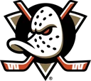
Анахайм9 из 12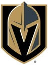
Вегас10 из 14
Тотал меньше 5,5
матчей с 5 голами и меньше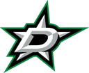
Даллас10 из 13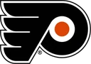
Филадельфия10 из 15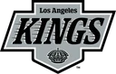
Лос-Анджелес7 из 11- Оттава8 из 13
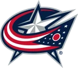
Коламбус6 из 11
Обе забьют
обе команды забили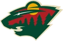
Миннесота15 из 15- Вегас14 из 14
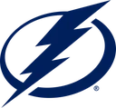
Тампа-Бэй12 из 12- Сиэтл13 из 13
- Вашингтон12 из 12
Овертаймы и буллиты
ничья в основное время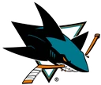
Сан-Хосе6 из 13- Баффало5 из 12
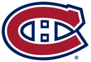
Монреаль5 из 13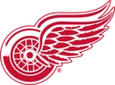
Детройт5 из 13- Нэшвилл5 из 13
Серия побед
идёт сейчас- Монреаль4 победы
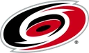
Каролина3 победы- Вашингтон3 победы
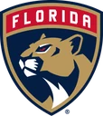
Флорида2 победы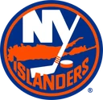
Айлендерс2 победы
Серия поражений
идёт сейчас- Виннипег7 поражений
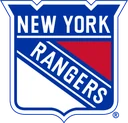
Рейнджерс3 поражения- Филадельфия3 поражения
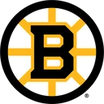
Бостон2 поражения- Торонто2 поражения
Сильнее всех дома
побед на своём льду- Тампа-Бэй6 из 6
- Рейнджерс6 из 7
- Бостон5 из 6
- Миннесота4 из 5
- Вегас6 из 8
Сильнее всех в гостях
побед на выезде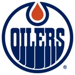
Эдмонтон5 из 5- Каролина7 из 9
- Монреаль5 из 7
- Юта5 из 8
- Даллас3 из 5
Все команды
Доля матчей сезона. Нажмите на команду — её страница в приложении.
| Команда | И | Ср. тотал | ТБ 4,5 | ТБ 5,5 | ТБ 6,5 | Обе забьют | ОТ/Б | Серия | Дома | В гостях |
|---|---|---|---|---|---|---|---|---|---|---|
| Сиэтл | 13 | 7,4 | 92% | 85% | 77% | 100% | 23% | 1 В | 4–2 | 4–3 |
| Вашингтон | 12 | 6,7 | 83% | 83% | 67% | 100% | 8% | 3 В | 6–2 | 2–2 |
| Юта | 14 | 6,9 | 93% | 79% | 57% | 93% | 14% | 1 В | 4–2 | 5–3 |
| Анахайм | 12 | 6,7 | 100% | 75% | 42% | 100% | 17% | 1 П | 1–4 | 4–3 |
| Вегас | 14 | 6,4 | 86% | 71% | 64% | 100% | 21% | 1 В | 6–2 | 3–3 |
| Эдмонтон | 13 | 7,6 | 77% | 69% | 62% | 92% | 31% | 1 В | 4–4 | 5–0 |
| Колорадо | 13 | 7,4 | 100% | 69% | 69% | 100% | 8% | 1 В | 5–2 | 2–4 |
| Тампа-Бэй | 12 | 6,8 | 92% | 67% | 50% | 100% | 17% | 1 В | 6–0 | 2–4 |
| Торонто | 15 | 7,1 | 87% | 67% | 67% | 100% | 20% | 2 П | 4–4 | 3–4 |
| Рейнджерс | 14 | 6,1 | 71% | 64% | 50% | 79% | 7% | 3 П | 6–1 | 1–6 |
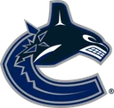 Ванкувер | 14 | 7,7 | 100% | 64% | 50% | 100% | 21% | 1 В | 1–5 | 2–6 |
| Монреаль | 13 | 6,2 | 77% | 62% | 62% | 85% | 38% | 4 В | 3–3 | 5–2 |
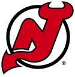 Нью-Джерси | 13 | 6,2 | 92% | 62% | 38% | 92% | 15% | 1 П | 6–2 | 2–3 |
| Нэшвилл | 13 | 6,2 | 85% | 62% | 54% | 92% | 38% | 2 П | 3–5 | 1–4 |
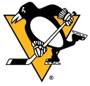 Питтсбург | 13 | 6,7 | 85% | 62% | 62% | 85% | 38% | 1 П | 4–2 | 1–6 |
| Баффало | 12 | 6,2 | 75% | 58% | 58% | 83% | 42% | 1 В | 3–3 | 2–4 |
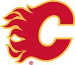 Калгари | 12 | 6,1 | 83% | 58% | 42% | 92% | 0% | 1 П | 4–3 | 1–4 |
| Детройт | 13 | 5,8 | 77% | 54% | 54% | 85% | 38% | 2 В | 4–4 | 2–3 |
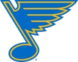 Сент-Луис | 13 | 5,9 | 69% | 54% | 46% | 77% | 8% | 1 В | 4–3 | 2–4 |
| Сан-Хосе | 13 | 6,3 | 77% | 54% | 54% | 85% | 46% | 2 П | 2–3 | 4–4 |
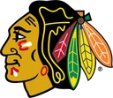 Чикаго | 13 | 5,8 | 85% | 54% | 38% | 85% | 8% | 1 П | 4–4 | 0–5 |
| Бостон | 14 | 5,9 | 86% | 50% | 29% | 86% | 14% | 2 П | 5–1 | 4–4 |
| Каролина | 15 | 6,1 | 80% | 47% | 40% | 87% | 20% | 3 В | 4–2 | 7–2 |
| Миннесота | 15 | 5,5 | 73% | 47% | 27% | 100% | 20% | 1 П | 4–1 | 5–5 |
| Флорида | 13 | 5,8 | 77% | 46% | 31% | 85% | 31% | 2 В | 2–1 | 5–5 |
| Айлендерс | 13 | 5,8 | 85% | 46% | 38% | 92% | 31% | 2 В | 4–2 | 3–4 |
| Виннипег | 13 | 5,7 | 85% | 46% | 31% | 100% | 23% | 7 П | 2–5 | 2–4 |
| Коламбус | 11 | 5,8 | 73% | 45% | 45% | 91% | 36% | 1 П | 4–3 | 1–3 |
| Оттава | 13 | 5,9 | 77% | 38% | 31% | 100% | 15% | 1 П | 5–2 | 3–3 |
| Лос-Анджелес | 11 | 5,9 | 64% | 36% | 36% | 100% | 27% | 1 П | 0–3 | 3–5 |
| Филадельфия | 15 | 5,3 | 73% | 33% | 27% | 93% | 27% | 3 П | 2–6 | 1–6 |
| Даллас | 13 | 5,0 | 62% | 23% | 15% | 69% | 31% | 2 П | 4–4 | 3–2 |